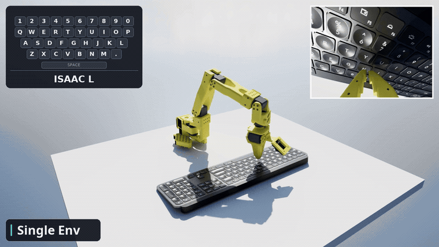

NVIDIA SO101 typing：最接近按钮的三阶段单Actor PPO

官方仿真 + 腕部相机固定7aec2ed26dce8c88ae007a2714680cce572e1466。本卡分开记录注册P0局部技能与公开tutorial流水线，避免把不同入口的默认参数混在一起。源码 源码
P0三个状态为SEEK_PRESS→RELEASE_KEY→CLEARANCE。事件来自键盘真实关节行程：按下50%、释放25%构成滞回，两次连续logical采样；已按字符在松开时保留；clearance中任何新按键事件均错误。所有键都释放且爪尖高于目标4mm连续2控制tick才完成；没有回初态、速度停稳或本项目100ms按压保持的同等要求。代码明确Newton路径在manager边界按25Hz采样，不能声称逐物理子步检查，更不能把两次采样等同于经过独立500Hz oracle验证的80ms连续保持。源码 源码 源码
Actor和Critic均接收22维policy：q相对复位5、qdot5、已下发位置命令5、归一化目标XYZ3、phase one-hot3、phase_elapsed1。单Actor输出5维Beta有界动作，动作是关节速度比例，不是笛卡尔坐标；速度上限[.30,1.10,.75,.20,.10]rad/s，经40ms积分到持久关节位置指令，夹爪固定。源码 源码 源码 源码
定义P_seek=I_same*I_phase0*clip((d_old−d)/.02,−1,1)，P_lift=I_same*I_phase≠0*clip((h−h_old)/.004,−1,1)。I_same同时排除reset和阶段切换，防止换目标凭空创造进度。原配置Manager权重6.25、12.5乘dt=.04后：
r=.25P_seek+.5P_lift+2E_down+E_up+E_clear+5I_complete−.0008 mean(Δa²)−.0004 mean((qdot/vmax)²)−.02S_scrape−5N_failure*(1−I_timeout)+0。
其中S_scrape=I_must_release*clip((.004−z_tip_key)/.004,0,1)*clip(v_lateral/.04,0,1)。N_failure为配置列出的终止项数量（多项可叠加）。上游timeout罚的注释与实际实现不符：配置写−50（意图净−2），但固定运行时is_terminated_term把所有time_outs屏蔽，专门的timeout项恒0，且同tick的其他failure项也被屏蔽。已追到Docker固定祖先和MDP导入，patch未改该函数；这是源码推导，未执行上游轨迹复现。源码 源码 源码 源码signed progress不是绝对接近分数，也不是带gamma修正并有策略不变性保证的PBRS。 按下、松开、净空事件一次性发放。源码 源码
P0注册默认：4096env、rollout64、max_iterations20000；双MLP256/256/128 ELU，Beta[-1,1]，两侧观测归一化；PPO epochs5/minibatches4，gamma.995、lambda.90、clip.2、entropy.005、lr1e−4 adaptive/KL.01。这是类默认，不是公开教程实际训练命令预算，不用于推算我们机器耗时。源码 源码
纠正此前20.48M teacher估算：tutorial实际teacher也用rollout32。 teacher_config调用runner_config，后者覆盖num_steps_per_env=32，teacher仅改Actor/Critic输入并未改回64；默认64env×32×5000=10,240,000 teacher环境步。vision同为10,240,000 PPO步，之前另有64×32×300=614,400 imitation环境步。teacher、warmup、vision总21,094,400交互步，不能把warmup叫PPO训练。源码默认seed4811，lr1e−4 fixed、epochs4（覆盖base5），minibatches4，其他算法值继承。源码 源码 源码 源码 源码
Tutorial不是P0：多字符随机38键任务、15mm Transit clearance；视觉Actor使用两帧RGB+本体/目标键身份/阶段，Critic用22维状态，先由合格teacher预热。不要把其成功或样本效率当作我们从旧checkpoint继续视觉PPO的公平基线。15mm覆盖在继承配置内。源码 源码 源码
可直接借鉴的设计是事件滞回、进度锁存、切换步归零、按下后禁用seek奖励、明确Actor/Critic阶段信息，以及实际有效配置链；不应照抄其采样保持标准、奖励净值或速度上限来替代X5验收。当前任务先完成同设计200万步验证；只有确认哪阶段继续失效才做后续单变量更改。